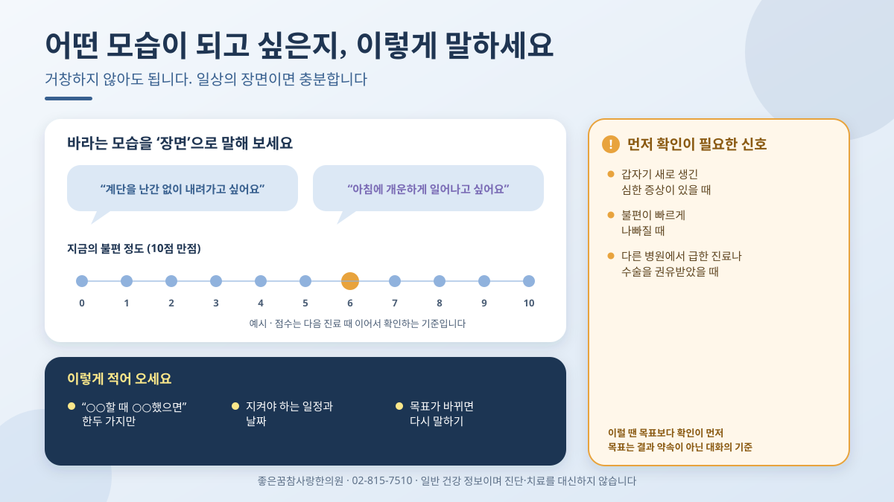

이종호 한의사 감수좋은꿈참사랑한의원 대표원장 (한의사 면허번호 19769)발행 2026-11-23 · 수정 2026-11-25
이 글의 차례
진료 목표는 "계단을 난간 없이 내려가고 싶어요", "아침에 개운하게 일어나고 싶어요"처럼 일상에서 달라지길 바라는 장면 한두 가지로 말씀하시면 충분합니다. 거창한 목표가 아니어도 이런 장면이 있으면 다음 진료 때 무엇을 이어서 확인할지 기준이 생깁니다. 목표가 떠오르지 않으면 지금 가장 불편한 장면부터 말씀하셔도 됩니다.
왜 목표를 장면으로 말하면 좋을까요
- "덜 아프면 좋겠다"보다 구체적인 장면이 있으면 달라진 점을 확인하기 쉬워집니다.
- 일상 동작을 기준으로 보면 작은 변화도 놓치지 않을 수 있습니다.
- 목표를 함께 정하면 진료 간격과 생활 관리 방향을 정하기 쉬워집니다.
- 목표는 결과를 약속하는 것이 아니라 대화의 기준이라 언제든 바꿀 수 있습니다.
- 가족이나 보호자와 함께 오셨을 때도 같은 장면을 기준으로 이야기하면 서로 이해가 쉬워집니다.
먼저 이렇게 여쭙니다
- 지금 특히 불편해서 일상에서 하기 어려운 일은 무엇인가요?
- 편해지면 가장 하고 싶은 일은 무엇인가요? 계단 오르기, 아침에 일어나기, 식사 즐기기처럼 말씀해 주세요.
- 꼭 지켜야 하는 일정(시험, 여행, 행사)이 있나요?
- 이전에 받은 진료에서 아쉬웠던 점이 있나요?
- 진료에 쓸 수 있는 시간과 방문 가능한 요일은 어떤가요?
목표를 이렇게 바꿔 말해 보세요
- "허리가 안 아팠으면" → "아침에 양말을 신을 때 허리를 덜 잡고 싶어요"
- "잠을 잘 자고 싶어요" → "새벽에 깨더라도 다시 잠드는 데 오래 걸리지 않았으면 해요"
- "소화가 잘됐으면" → "점심 먹고 오후 회의 때 더부룩하지 않았으면 해요"
- "살을 빼고 싶어요" → "저녁 늦게 먹는 날을 일주일에 두 번 이하로 줄이고 싶어요"
이처럼 언제, 어떤 장면에서, 무엇이 달라지길 바라는지 넣어 말하면 다음 진료에서 그 장면부터 함께 확인할 수 있습니다.
일상에서 먼저 해 볼 수 있는 것
- 하루 중 특히 힘든 시간과 상황을 떠올려 적어 보기
- 한두 가지만 골라 "○○할 때 ○○했으면 좋겠다"로 적어 오기
- 지금의 불편 정도를 10점 만점으로 매겨 두기
- 목표가 바뀌면 다음 진료 때 다시 말하기
- 장면을 고를 때 내가 매일 하는 일 하나, 꼭 하고 싶은 일 하나로 나눠 보기
예를 들면 이런 경우입니다
- 예를 들어 무릎이 불편한 어르신이라면 "통증이 없어졌으면"보다 "동네 시장까지 쉬지 않고 걸어가고 싶다"처럼 말씀해 주시면, 다음 진료에서 걸은 거리와 쉬었던 횟수를 함께 여쭐 수 있습니다.
- 예를 들어 시험을 앞둔 수험생이라면 "시험 날까지 오후에 목이 굳어 집중이 끊기는 일을 줄이고 싶다"처럼 날짜와 장면을 함께 말씀해 주시면, 남은 기간에 맞춰 현실적인 범위를 함께 정합니다.
- 예를 들어 아이를 키우는 부모라면 "아이를 안고 일어설 때 허리를 덜 잡고 싶다"처럼 하루에 여러 번 하는 동작을 목표로 잡으면, 작은 변화도 놓치지 않고 이어서 확인하기 쉽습니다.
한의원에서 함께 살필 수 있는 경우
- 목표가 막연할 때 일상의 불편을 하나씩 여쭈며 같이 정리합니다.
- 진료가 이어질수록 달라진 점을 기록하며 다음에 확인할 것을 정합니다.
- 일정이 정해진 목표가 있을 때 현실적인 범위를 함께 이야기합니다.
- 여러 곳이 동시에 불편할 때 무엇부터 살필지 우선순위를 함께 정합니다.
좋은꿈참사랑한의원에서는 첫 상담에서 일상의 장면을 함께 정하고, 진맥을 기본으로 하고 필요하다고 판단될 때 설진·복진이나 초음파를 더해 살핀 뒤 상태에 맞는 방법을 정합니다. 다음 진료에서는 "지난번 말씀하신 계단은 요즘 어떠세요?"처럼 그 장면부터 이어서 여쭙습니다.
자주 하는 오해
- 목표를 말하면 그만큼 나아질 것을 약속받는 것으로 여기는 분도 있지만, 목표는 함께 확인할 기준일 뿐이며 상태에 따라 조정합니다.
- 목표는 크고 분명해야 한다고 생각하기 쉬운데, 오히려 작고 자주 겪는 장면일수록 변화를 확인하기 쉽습니다.
- 한 번 정한 목표는 바꾸면 안 된다고 여기는 분도 있는데, 생활이 바뀌면 목표도 바꾸시는 것이 자연스럽습니다.
스스로 점검해 보세요
- 요즘 불편 때문에 하기 어려운 일을 한 가지 이상 말할 수 있다
- 그 일이 하루에 몇 번, 언제 있는지 안다
- 지금의 불편을 10점 만점으로 매겨 본 적이 있다
- 꼭 맞춰야 하는 날짜(시험, 여행, 행사)가 있다
- 이전 진료에서 기대와 달라 아쉬웠던 점이 있다
- 가족이 보기에 달라졌으면 하는 모습이 있다
해당하는 항목을 메모로 적어 오시면 첫 상담 시간을 더 알차게 쓸 수 있습니다. 하나도 떠오르지 않는다면 그것도 괜찮습니다. 진료실에서 하루 일과를 함께 짚어 가며 불편한 장면을 찾아봅니다.
이렇게 기록해 오시면 상담이 쉬워집니다
- 달라지길 바라는 장면 한두 가지
- 지금의 불편 정도(10점 만점 기준)
- 지켜야 하는 일정과 날짜
- 이전 진료 경험과 그때의 변화
- 진료 사이 그 장면에서 편했던 날과 힘들었던 날, 그날 있었던 일
이런 증상은 먼저 확인이 필요합니다
- 목표와 상관없이 갑자기 새로 생긴 심한 증상이 있는 경우
- 불편이 빠르게 나빠지는 경우
- 다른 병원에서 급한 진료나 수술을 권유받은 경우
이런 경우에는 목표 이야기보다 확인이 먼저이니 진료 시작 때 바로 말씀해 주세요. 복용 중인 약은 처방한 의사와 상의 없이 줄이거나 끊지 않습니다. 상태에 따라 현실적으로 어려운 부분이 있다면 그 점도 솔직하게 말씀드립니다.
얼마나 지켜보고, 언제 다시 이야기하면 좋을까요
- 정한 장면은 진료 사이사이 일주일에 한두 번, 10점 만점으로 점수를 적어 두세요. 하루하루의 오르내림보다 몇 주의 흐름을 보는 것이 중요합니다.
- 2~3주 동안 그 장면에서 달라진 점이 거의 없다고 느껴지면, 다음 진료 때 솔직하게 말씀해 주세요. 방법이나 목표를 함께 다시 정합니다.
- 목표로 한 장면이 편해졌다면 다음 장면을 새로 정하거나 방문 간격을 넓히는 것을 함께 이야기합니다.
- 목표와 관계없이 새로 생긴 증상이 빠르게 나빠지면 다음 진료를 기다리지 말고 먼저 연락해 주세요.
처음 오시면 이렇게 진행합니다
첫 방문에는 접수 때 기본 정보를 적고, 진료실에서 불편한 곳과 경위, 그리고 일상에서 어려운 장면을 여쭙니다. 이어서 진맥과 신체 진찰을 하고, 필요하다고 판단될 때 설진·복진이나 초음파로 확인합니다. 그 뒤 오늘 받을 치료와 이유, 함께 정한 장면을 다음에 어떻게 확인할지를 설명드리고 진행합니다. 치료 뒤에는 상태를 확인하고 다음 방문을 안내합니다.
관련 글
- 한의원에 처음 가면 어떤 순서로 진료하고 무엇을 준비하나요?
- 체중 목표를 세울 때 숫자 대신 어떤 목표를 함께 정하면 좋을까요?
- 진료를 받은 뒤에는 어떤 안내를 듣고 언제 다시 와야 하나요?

여쭙는 것
- 지금 특히 불편해서 일상에서 하기 어려운 일은 무엇인가요?
- 편해지면 가장 하고 싶은 일은 무엇인가요? 계단 오르기, 아침에 일어나기, 식사 즐…
- 꼭 지켜야 하는 일정(시험, 여행, 행사)이 있나요?
생활에서 해 볼 것
- 하루 중 특히 힘든 시간과 상황을 떠올려 적어 보기
- 한두 가지만 골라 "○○할 때 ○○했으면 좋겠다"로 적어 오기
- 지금의 불편 정도를 10점 만점으로 매겨 두기
한의원에서 함께 살필 것
- 목표가 막연할 때 일상의 불편을 하나씩 여쭈며 같이 정리합니다.
- 진료가 이어질수록 달라진 점을 기록하며 다음에 확인할 것을 정합니다.
- 일정이 정해진 목표가 있을 때 현실적인 범위를 함께 이야기합니다.
먼저 확인이 필요한 신호
- 목표와 상관없이 갑자기 새로 생긴 심한 증상이 있는 경우
- 불편이 빠르게 나빠지는 경우
- 다른 병원에서 급한 진료나 수술을 권유받은 경우
한눈에 보는 표
| 구분 | 핵심 |
|---|---|
| 여쭙는 것 | 지금 특히 불편해서 일상에서 하기 어려운 일은 무엇인가요? 편해지면 가장 하고 싶은 일은 무엇인가요? 계단 오르기, 아침에 일어나기, 식사 즐기기처럼 말씀해 주세요. |
| 생활에서 해 볼 것 | 하루 중 특히 힘든 시간과 상황을 떠올려 적어 보기 한두 가지만 골라 "○○할 때 ○○했으면 좋겠다"로 적어 오기 |
| 한의원에서 함께 살필 것 | 목표가 막연할 때 일상의 불편을 하나씩 여쭈며 같이 정리합니다. 진료가 이어질수록 달라진 점을 기록하며 다음에 확인할 것을 정합니다. |
| 먼저 확인이 필요한 신호 | 목표와 상관없이 갑자기 새로 생긴 심한 증상이 있는 경우 불편이 빠르게 나빠지는 경우 |
자주 묻는 질문
목표가 없어도 되나요?
네. 지금 불편한 점부터 말씀해 주시면 됩니다.
목표를 너무 높게 잡은 것 같아요.
진료 중 함께 조정할 수 있으니 편하게 말씀해 주세요.
목표를 정해야 진료가 시작되나요?
아닙니다. 상담하면서 차차 정해도 됩니다.
가족이 대신 목표를 말해도 되나요?
네. 어르신이나 아이처럼 직접 설명하기 어려운 경우 가족이 본 장면을 말씀해 주셔도 상담에 도움이 됩니다.
좋은꿈참사랑한의원은 재진 때 지난번 이야기부터 이어서 여쭙니다. 진료시간과 예약은 오시는 길에서 확인하세요.
어디서 상담받을 수 있나요?
좋은꿈참사랑한의원은 서울 동작구 만양로2길 2 신성빌딩 3층·5층(서울 동작구 상도동, 7호선 상도역 3번 출구 근처)에 있습니다. 한의사 3명(이종호 대표원장, 조영기 수석진료원장, 정원영 진료원장)이 진료합니다. 진료시간은 평일 09:30~20:00(점심 13:00~14:00), 토·일·공휴일 09:30~15:00이며, 방문 전 전화로 확인을 권합니다. 예약은 네이버 예약, 카카오톡 상담, 전화 02-815-7510로 받습니다.
이 글은 일반적인 건강 정보이며 개인의 진단이나 치료를 대신하지 않습니다. 증상이 있거나 복용 중인 약이 있다면 진료를 통해 확인하세요. 치료 효과는 개인마다 다를 수 있습니다.
작성 기준: 일반적으로 알려져 있는 건강 정보를 참고해 정리했습니다(대표원장 감수). 증상 기록은 1~2주 동안 하루 1회, 비슷한 시간에 적어 오시면 지난 상태와 비교하기 쉽습니다.